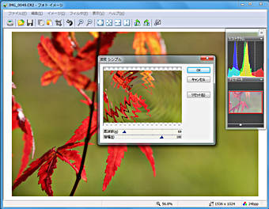

FileVisorには、Jpeg/Tiff/Bitmap等のイメージファイルをレタッチするエディタが組み込まれています。
このエディタには、イメージのリサイズや減色、色合い調整、明るさやコントラストの調整といったレタッチには必須の機能の他に、 イメージに様々な効果を与える100種類以上のフィルタコマンドが実装されています。

ファイルペインでイメージファイルを選択し、 メニューから［ツール］－［エディタで編集］コマンド を実行すると、イメージエディタが起動します。
初期設定ではEキーにこのコマンドが割り当てられています。
オプション設定タブ中に ［プログラム］の設定があります。 この機能を利用すると、FileVisorで内蔵するイメージエディタ以外のお気に入りのアプリケーションプログラムを 別途登録することが可能です。
オプション設定タブ中に ［アドインツール］の設定があります。 この機能を利用すると、特定の拡張子を持つファイルを開くアプリケーションプログラムを、 独自に登録することが可能です。